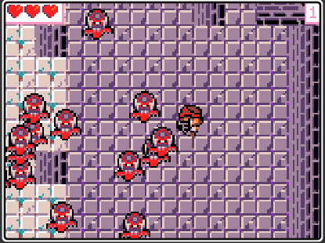
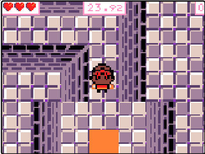
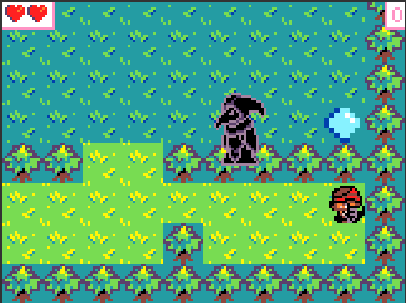

| Etxe abandonatu batean sartu zara eta mamuak agertu dira. Zure helburua da mansio honetatik ihes egitea harrapatuta izan aurretik. Jolas honek helburu ezberdin batzuk ditu zuk irabazteko (Nola jolastu atalean azalduko da). |
|
 |
 |

| Etxe abandonatu batean sartu zara eta mamuak agertu dira. Zure helburua da mansio honetatik ihes egitea harrapatuta izan aurretik. |
| ATZERA BUELTATU |